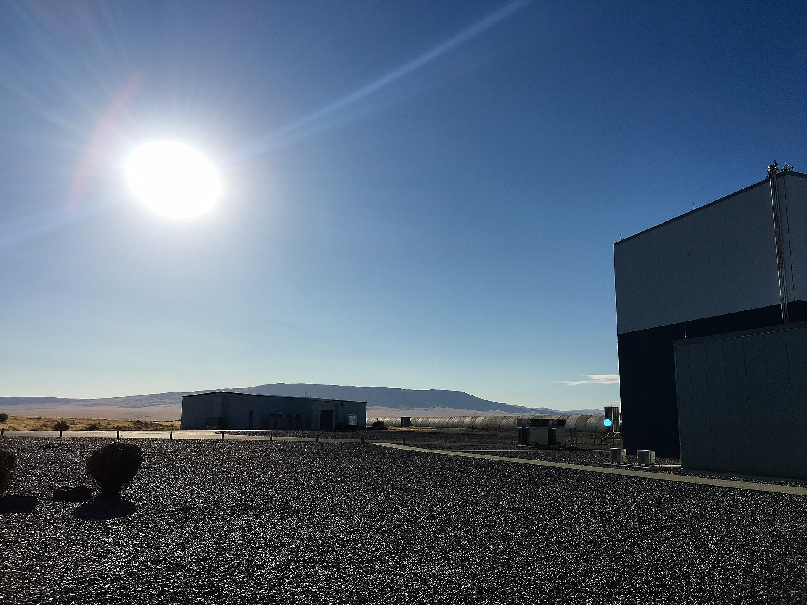
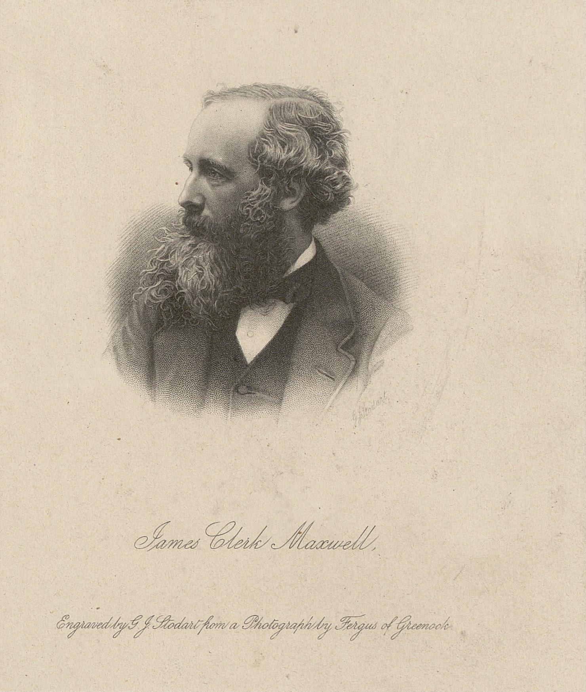
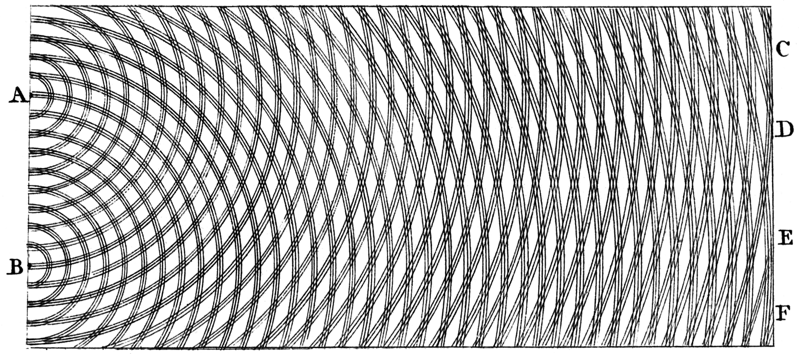
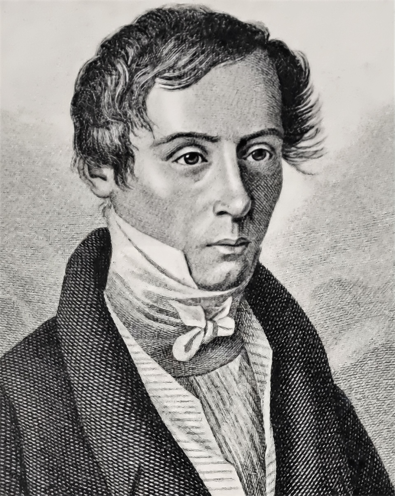
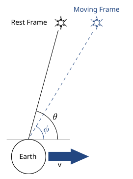
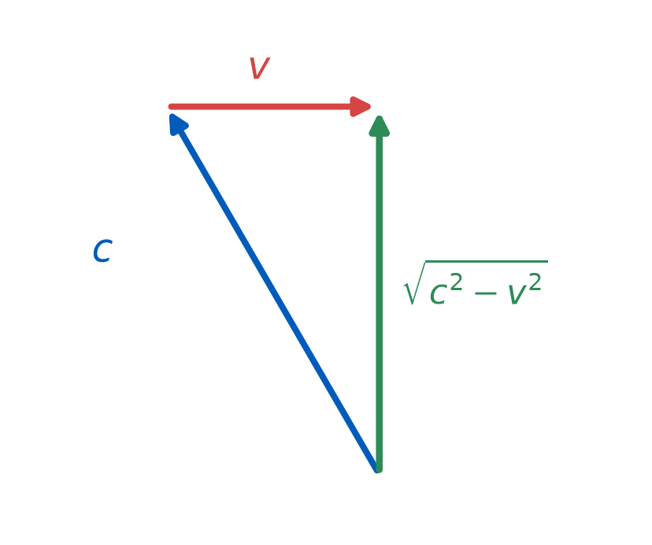
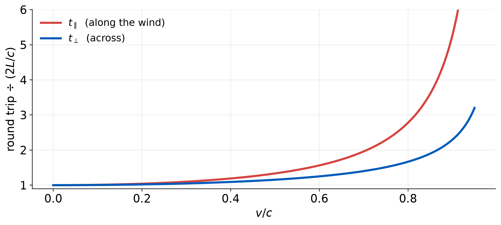
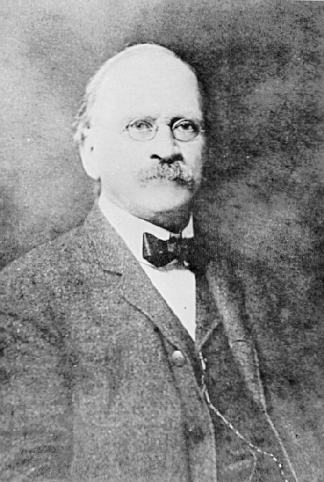

From electricity and magnetism alone: c = 299,792,458 m/s
Fizeau's 1849 measurement of light: c = 313,300,000 m/s
Maxwell was not looking for light. It fell out.How This Course Works — and the Ether Problem
PHY 208 · Special Relativity · Lecture 1
Tim Thomay
2026-08-25
PHY 208
General Physics IV
Special Relativity and Thermodynamics
Tim Thomay · Fall 2026
What this course is
Two subjects that look unrelated and are not.
Special relativity first — seven weeks. Then thermodynamics.
Both were settled by people arguing about light and heat engines, and both turned out to be about what cannot be done.
Dates worth writing down
| Prep check | every Tuesday, 10:30 — before class |
| Problem set | Sunday 11:59 p.m. |
| Notebook entry | 11:00 at the meeting after each demonstration |
| In-class exam | Tuesday, October 6 — the only exam |
| Presentation 1 | one session in weeks 5–7 |
| Presentation 2 · capstone | one session in weeks 12–15 |
| Capstone written questions | Wednesday, December 16 |
There is no final exam, and no meeting in the December exam period.
How the weekly work runs
Before class
Prep check — questions on the reading or video, graded on correctness, two attempts. Look things up.
Plus one prediction prompt — completion only, answer honestly.
Problem set — worked problems.
In class
Concept questions on Top Hat — vote, argue, vote again.
Demonstration notebook — predict, observe, reconcile.
AI, in both directions
You may use it
Problem sets · preparation · project research
Say what you used and how.
You may not
The in-class exam · presentations
Where you reason aloud, without notes or devices.
The demonstration notebook
One page per demonstration. Three things:
- Prediction — written before it runs
- Observation — what actually happened
- Reconciliation — if they differ, why was your reasoning wrong?
Graded on the quality of the reasoning, never on whether you were right.
A confidently wrong prediction, honestly reconciled, earns full credit.
Pairs
Group work and both presentations happen in pairs.
Find your own partner by the end of class, Thursday September 3.
Anyone unpaired is paired on early-semester performance, announced the following week.
Pairs reshuffle for thermodynamics — you are with someone for seven weeks, not for the semester.
Top Hat — set it up now
Sign in with your UB account, not as a guest.
Join code on the board.
Today’s questions are practice — nothing counts.
From Thursday they count as normal.
The physics starts here
Two experiments, one instrument

1887 · Cleveland 11 m folded arms ### Found nothing

2015 · Hanford & Livingston 4 km arms ### Found something
Sound waves travel through air.
Ocean waves travel through water.
Waves on a string travel through the string.
What does light travel through?
Maxwell, 1865

James Clerk Maxwell 1831–1879
“We can scarcely avoid the inference that light consists in the transverse undulations of the same medium which is the cause of electric and magnetic phenomena.”
— A Dynamical Theory of the Electromagnetic Field, 1865
The equations
Differential
\(\nabla\cdot\mathbf{E}=\rho/\varepsilon_0\)
\(\nabla\cdot\mathbf{B}=0\)
\(\nabla\times\mathbf{E}=-\partial\mathbf{B}/\partial t\)
\(\nabla\times\mathbf{B}=\mu_0\mathbf{J}+\mu_0\varepsilon_0\,\partial\mathbf{E}/\partial t\)
Integral — the form from PHY 107
\(\oint\mathbf{E}\cdot d\mathbf{A}=Q_{\text{enc}}/\varepsilon_0\)
\(\oint\mathbf{B}\cdot d\mathbf{A}=0\)
\(\oint\mathbf{E}\cdot d\boldsymbol{\ell}=-\,d\Phi_B/dt\)
\(\oint\mathbf{B}\cdot d\boldsymbol{\ell}=\mu_0 I+\mu_0\varepsilon_0\,d\Phi_E/dt\)
In vacuum these give a wave equation with speed \(c=1/\sqrt{\varepsilon_0\mu_0}\)
But a wave in what?
| Wave | Medium | Speed set by |
|---|---|---|
| String | the string | tension, linear density |
| Sound | air | bulk modulus, density |
| Ocean | water | depth, gravity |
| Light | ??? | \(\varepsilon_0,\ \mu_0\) |
\(\varepsilon_0\) and \(\mu_0\) are the electric and magnetic properties of something.
The luminiferous ether
To carry light, it must be:
- Everywhere — all of space, Sun to Earth included
- Enormously stiff — transverse waves at \(3\times10^{8}\) m/s means stiffer than steel
- Frictionless — no measurable drag on planetary orbits over centuries
- Invisible, massless, undetectable by any direct means
The ether was not a fringe idea
It was the foundation of 19th-century optics — not idle metaphysics.
| Young | 1801 | interference demands a wave |
| Fresnel | 1818 | diffraction and polarization explained |
| Bradley | 1727 | stellar aberration |
Every one was read in ether terms, and the readings worked.
Young, 1801

“The middle of the two portions is always light, and the bright stripes on each side are at such distances that the light coming to them from one of the apertures must have passed through a longer space than that which comes from the other by an interval which is equal to the breadth of one, two, three, or more of the supposed undulations.”
— Young, Bakerian Lecture, 1803
Fresnel, 1818

1788–1827
Took the wave theory and made it quantitative — diffraction, polarization, the whole apparatus of 19th-century optics.
His ether was a mechanical, elastic solid.
Bradley, 1727 — aberration
1693–1762

Starlight arrives tilted, because Earth moves while the light comes down.
The ether wind
If the ether is at rest and Earth orbits through it at 30 km/s, then from Earth’s frame there is a wind of ether streaming past.
Light should travel at \(c+v\) downwind, \(c-v\) upwind — like sound in moving air.
Earth's orbital speed: v = 29,800 m/s
Ratio: v/c = 9.94e-05
Effect on travel time: (v/c)² = 9.88e-09
A one-part-in-a-hundred-million effect.
No clock in 1887 could do that. No ruler could do that.A swimmer moves at speed \(c\) relative to the water. A river flows at speed \(v\).
- Swimmer A swims 100 m downstream, then back.
- Swimmer B swims 100 m across, then back.
Who returns first?
(a) A (b) B (c) They tie (d) Depends on \(v\)
Why the river matters going across
She cannot aim straight across — the current would carry her downstream.
She must aim upstream and let the current push her back onto the line.

Only \(\sqrt{c^2-v^2}\) is left for actually crossing.
The river costs her both ways — just less than it costs the downstream swimmer.
Downstream and back — the derivation
Each leg is just distance over speed. Only the speed relative to the bank changes.
\[t_\parallel=\underbrace{\frac{L}{c+v}}_{\text{with the current}} +\underbrace{\frac{L}{c-v}}_{\text{against it}}\]
Common denominator \((c+v)(c-v)=c^2-v^2\):
\[t_\parallel=\frac{L(c-v)+L(c+v)}{c^2-v^2}=\frac{2Lc}{c^2-v^2}\]
Divide top and bottom by \(c^2\):
\[t_\parallel=\frac{2L}{c}\cdot\frac{1}{1-v^2/c^2}\]
Across and back — the derivation
Effective crossing speed is \(\sqrt{c^2-v^2}\) — from the triangle.
Both legs are the same, so:
\[t_\perp=\frac{2L}{\sqrt{c^2-v^2}}\]
Factor \(c^2\) out of the square root:
\[\sqrt{c^2-v^2}=c\sqrt{1-v^2/c^2}\]
\[t_\perp=\frac{2L}{c}\cdot\frac{1}{\sqrt{1-v^2/c^2}}\]
Same prefactor, different power
\[t_\parallel=\frac{2L}{c}\cdot\frac{1}{1-v^2/c^2} \qquad t_\perp=\frac{2L}{c}\cdot\frac{1}{\sqrt{1-v^2/c^2}}\]
Write \(\beta^2 = v^2/c^2\). Then the bracket is \((1-\beta^2) < 1\), and
\[\frac{t_\parallel}{t_\perp}=\frac{1}{\sqrt{1-\beta^2}}\;>\;1\]
\[t_\parallel > t_\perp \quad \text{always}\]
The downstream gain never compensates the upstream loss.
With numbers
\(L = 100\) m · swims at \(c = 2\) m/s · river \(v = 1\) m/s
| Downstream | \(100/(2+1)\) | 33.3 s |
| Back upstream | \(100/(2-1)\) | 100.0 s |
| 133.3 s | ||
| Across and back | \(200/\sqrt{3}\) | 115.5 s |
Always, at every speed

Albert A. Michelson

1852–1931
- Naval officer, then physicist
- Obsessive about the speed of light — a career’s work
- First American Nobel laureate in the sciences, 1907
“The more important fundamental laws and facts of physical science have all been discovered, and these are now so firmly established that the possibility of their ever being supplanted in consequence of new discoveries is exceedingly remote.”
— Michelson, 1894
…and Edward Morley

1838–1923
A chemist, not a physicist — and among the most precise experimentalists alive.
He had spent years measuring the atomic weight of oxygen to one part in ten thousand.
The idea
Build an instrument that measures neither time nor distance,
but interference.
You are not timing anything. You are comparing a light wave to itself.
The ruler is the wavelength — about 500 nm.
Thursday
The interferometer, and what it found
Bring your demonstration notebook — the first entry is Thursday, and it counts.
Reading: Taylor & Wheeler ch. 1 (§1.1–1.2); HRW 37-1
Watch: PBS Space Time, How Luminiferous Aether Led to Relativity (18 min)
Exit ticket
You are hunting an effect of one part in \(10^8\).
In one sentence: why does comparing light to itself work when a clock cannot?
Scan it, or find it on UB Learns.
Not graded, and it never will be — I read these to decide what to spend class time on, so write what you actually think. “I don’t follow this, and here is where I lost it” is a useful answer.
Due 11:59 tonight.
PHY 208 — How This Course Works, and the Ether Problem Tim Thomay · University at Buffalo · Fall 2026
Course material licensed CC BY-SA 4.0
Images retain their original licenses — see img/CREDITS.md